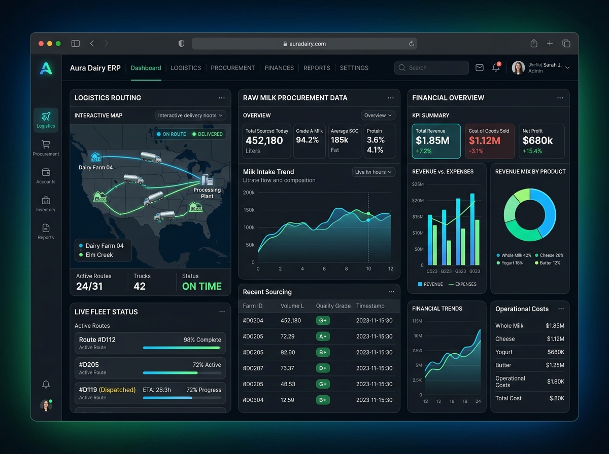

Reactive frontend
Angular 19 Standalone Components and Signals structure the user interface and its reactive state. The application separates operational areas into focused workflows for procurement, logistics, POS, and accounts.
Project 01 · Enterprise ERP & Logistics
A connected operations platform designed to bring dairy procurement, delivery logistics, point-of-sale workflows, driver collections, and financial accounting into one operational system.

01 · Business context
Dairy operations coordinate recurring procurement, inventory movement, customer billing, delivery routes, driver collections, and account reconciliation. This project brings those workflows together so operational activity and financial records can be managed within a shared application.
The platform covers raw milk procurement, multi-route logistics, point-of-sale activity, driver-facing workflows, and business reporting.
02 · Engineering approach
Angular 19 Standalone Components and Signals structure the user interface and its reactive state. The application separates operational areas into focused workflows for procurement, logistics, POS, and accounts.
Firestore is organized into 17 collections. Firebase Authentication and Firestore security rules support multi-tier role-based access control (RBAC) for protected application data.
An automated double-entry ledger supports daily billing, balance calculations, and driver wallet collections, connecting operational transactions with accounting records.
Node.js Cloud Functions handle server-side scheduled jobs, including recurring processing and monthly statement generation.
An offline-capable Progressive Web App interface supports delivery drivers in route-based workflows where connectivity may be inconsistent.
Chart.js dashboards present business and operational data in visual form to support day-to-day monitoring.
03 · Core capabilities
04 · Technology
The implementation combines a modern Angular frontend with Firebase-managed identity and data, serverless Node.js automation, and chart-based reporting.
05 · Engineering considerations
Performance figures and quantified business outcomes are intentionally not stated here without independently verifiable measurement data.
Have a complex workflow to build?
Available for full-time engineering opportunities and selected freelance work involving web applications, business systems, and cloud-backed platforms.
Discuss a project Connect on LinkedIn